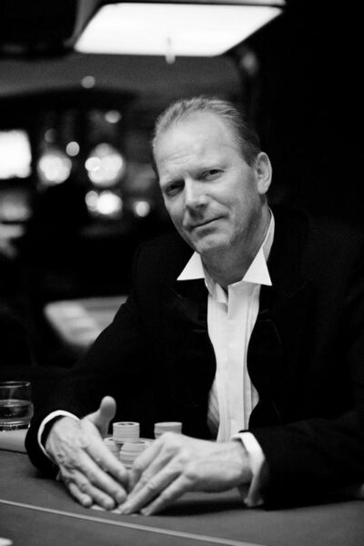
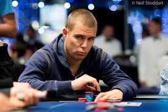

Two of Europe's most decorated poker players created OPC to give every player a fair shot at international recognition.

Marcel Lüske is one of the most recognizable figures in European poker. Known worldwide as "The Flying Dutchman," he has built a career spanning more than two decades at the highest levels of professional poker, accumulating over $5 million in live tournament earnings.
Named European Player of the Year in both 2001 and 2002, Marcel was ranked the #1 poker player in Europe and has competed on the biggest stages in the world, from the World Series of Poker to the European Poker Tour.
Beyond the felt, Marcel founded the Federation Internationale de Poker Association (FIDPA), establishing the first standardized international rules for poker. That same drive for transparency, fairness, and professionalism led him to create the Open Poker Championship — a platform where amateur and recreational players across Europe can compete in verified tournaments and earn international rankings.

Noah Boeken is a legendary Dutch poker player whose journey to the top began in an unexpected place — as the European Champion of Magic: The Gathering. That strategic brilliance translated perfectly to the poker table, where Noah became the first Dutchman ever to win a European Poker Tour (EPT) title in 2005.
A protégé of Marcel Lüske, Noah has amassed over $2.9 million in live tournament earnings, with major victories including the Master Classics of Poker. His combination of analytical thinking and competitive spirit has made him one of the most respected players in European poker history.
Noah's passion for growing the game and making it accessible to new players made him a natural co-founder of OPC. He brings firsthand understanding of what competitive players need: fair structures, transparent rankings, and a community that rewards skill and dedication.
Across Europe, thousands of poker tournaments happen every week in casinos, clubs, and card rooms. But until now, there was no way to connect them — no shared ranking system, no unified standards, and no path for local players to gain international recognition.
Marcel and Noah saw this gap firsthand. After decades of competing at the highest levels, they realized that the amateur poker scene — the foundation of the game — deserved the same transparency, structure, and excitement that professional circuits enjoy.
That's why they founded the Open Poker Championship: a free platform that connects verified live poker tournaments across six European countries into one international ranking system. Players compete locally and earn points towards a European championship, while organizers gain access to international sponsorship, shared rankings, and a growing community of verified players.
Every tournament is verified. Every result is recorded. Every ranking is based on real, auditable data — no hidden algorithms, no pay-to-play advantages.
All players are age-verified. Standardized rules based on FIDPA international standards ensure a level playing field at every table, in every country.
OPC is completely free for players and organizers. One verification unlocks unlimited tournaments across Europe — no fees, no subscriptions, no barriers.

Tournament organizers across Europe are partnering with OPC to offer their players international recognition.
Get in touchWhether you're a player looking for your next tournament or an organizer wanting to grow your events, OPC is free and open.